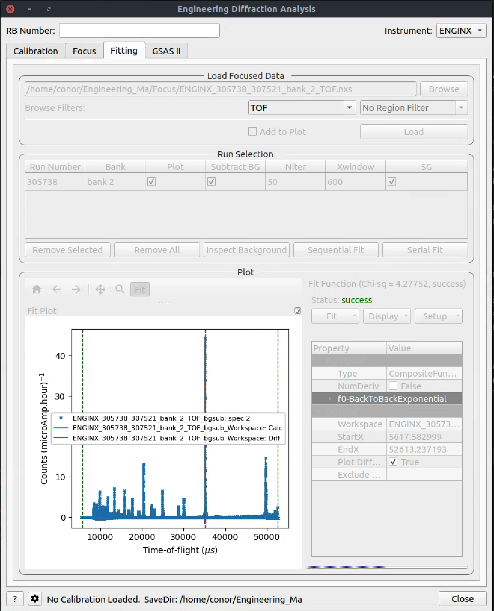

\(\renewcommand\AA{\unicode{x212B}}\)
Diffraction Changes¶
Powder Diffraction¶
New features¶
Introduced an input parameter in WANDPowderReduction to specify that the input workspaces are from event filtering. In such a situation, the overall reduction time may be significantly reduced.
Added support for ILL D4C instrument, a liquid diffractometer. This adds a new algorithm responsible for the reduction stage: D4ILLReduction, which handles calling the loader, correcting for dead time, bank position offsets, relative efficiency, and normalisation to monitor or time.
Increased the speed of the Fourier filter in the POLARIS total scattering reduction by reducing the
Rmaxparameter used in the pair of (forward and backward)PDFFourierTransformcalls and optimising the integration code inside PDFFourierTransform v2.
Bugfixes¶
PDDetermineCharacterizations now uses the time average mean value of logs.
Calling focus twice in a reduction using the ISIS Powder Diffraction scripts no longer runs the normalisation and absorption correction steps twice. The second run of focus was using a partially processed input file from the first focus.
Fixed an issue with HB2AReduce when
colltranscolumn is not available in the data file. This corresponds to the situation when thecolltransmotor is not connected.
Engineering Diffraction¶
{kind=link}
New features¶
On the
GSASIItab of the Engineering Diffraction interface, when a successful refinement is run, the output table workspace for the lattice parameters now includes theMicrostrainvalue and the column title is marked when this parameter has been refined. A similar instrument parameter table workspace is now also generated which includesSigma-1andGamma(Y), with a refined flag, and the fitting range. The Pawley reflections are output to a separate table workspace if they are available.An indicator has been added below the
FitPropertyBrowseron the Engineering Diffraction interfaceFittingtab. This will display when the fit is in progress and whether the most recent fit was successful or a failure.
Bugfixes¶
Corrected the tabbing order between widgets on the Engineering Diffraction interface.
Add a scrollbar to the
GSASIItab, on the Engineering Diffraction interface, to allow a smaller interface height, similar to theFittingtab.A check has been added to ensure there are enough data points before attempting to fit a diffraction peak in FitPeaks.
The SaveVulcanGSS algorithm has been marked as deprecated as of 2022-11-30.
Single Crystal Diffraction¶
New features¶
Added a new option to IntegratePeaksSkew: to get the initial TOF window from back-to-back exponential coefficients if specified in the instrument’s
parameters.xmlfile.Back-to-back exponential coefficients have been added to the SXD
parameters.xmlfileInput arguments to IntegratePeaksSkew have been simplified. The parameter
FractionalTOFWindowhas been removed, if a user wants to integrate with an initial windowdTOF/TOF = constantfor all peaks then this can be achieved by settingThetaWidth = 0. This is a breaking change!A new algorithm, SaveINS, allows for writing of
.insinput file for SHELXAdded two options to IntegratePeaksSkew: to scale angular resolution parameter (
ThetaWidth) by wavelength, and to specify minimum number of TOF bins in a valid peak (NTOFBinsMin).Improve estimation of resolution parameters in IntegratePeaksSkew to make it more robust to outliers.
Made Lorentz correction in IntegratePeaksSkew optional.
Added back bank 14 to TOPAZ, for a total of 20 banks.
Exposed indexing tolerance for SCDCalibratePanels when using
RecalculateUBoption.Sped up ellipsoid integration in IntegratePeaksMD v2 by introducing parallelization.
Bugfixes¶
The IntegratePeaksProfileFitting v1 library
ICCFitToolsmodule has been updated to support more recent versions of SciPy where the factorial function moved fromscipy.misc.factorialtoscipy.special.factorial. On newer versions of SciPy, the algorithm previously failed.Replaced deprecated NumPy
np.inttype in ConvertWANDSCDtoQ.SaveReflections v1 now warns if an empty peak table is saved and doesn’t fail with an error.
The deprecated Matplotlib
bivariate_normalfunction has been replaced inBVGFitTools.py.LoadIsawPeaks no longer fails when loading peaks with modulation vectors that cannot recover the modulated UB matrix.
Checks to ensure that colourscale max > min have been added to IntegratePeaksSkew.
IntegratePeaksSkew will now close a generated figure if an error occurred while trying to write to a file (e.g. a file of same name was already open).
HKL of peak if
UpdatePeakPosition = Truein IntegratePeaksSkew is now set properly.SelectCellWithForm and SelectCellOfType now correctly transform modulation vectors.
Modulation vectors are now correctly transformed in TransformHKL.